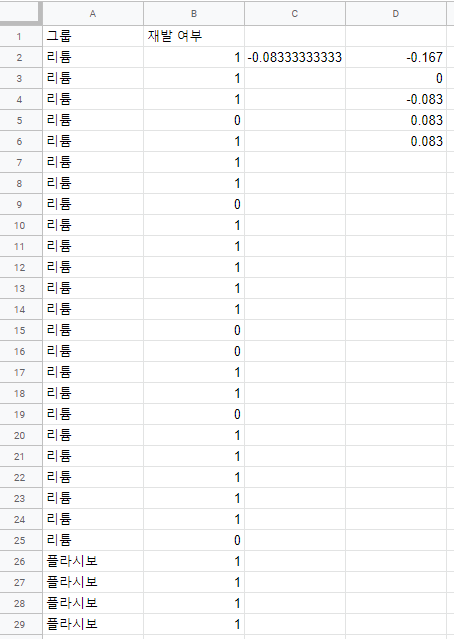
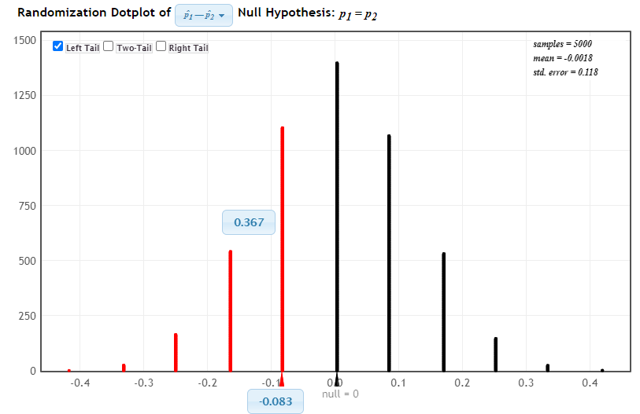
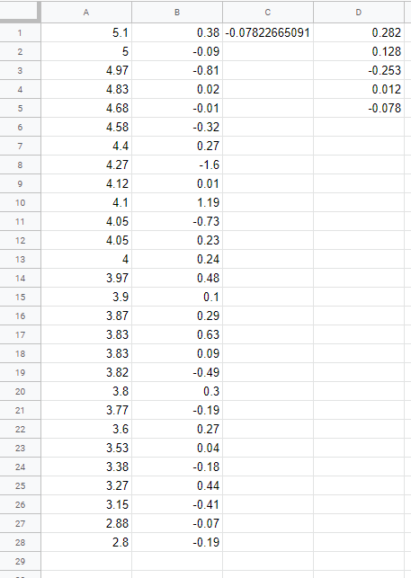
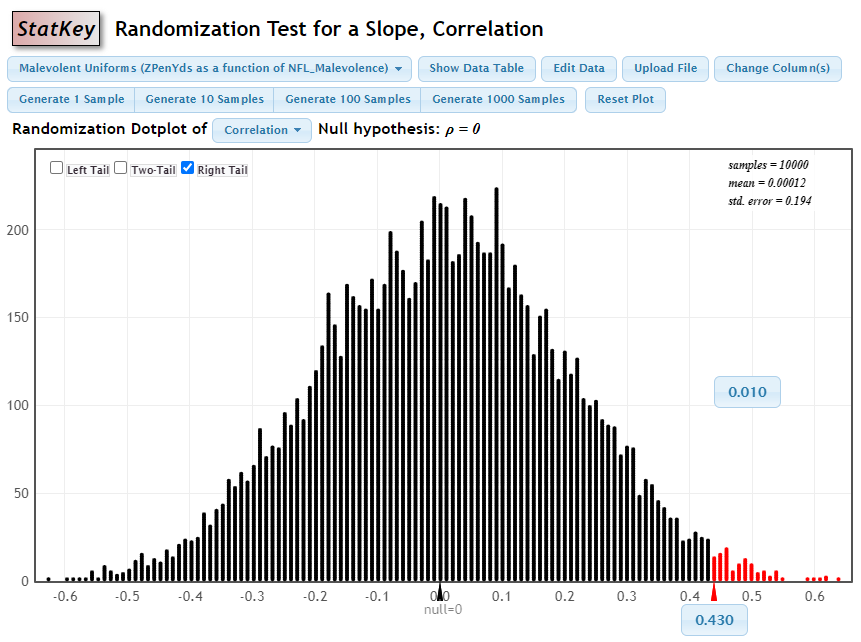
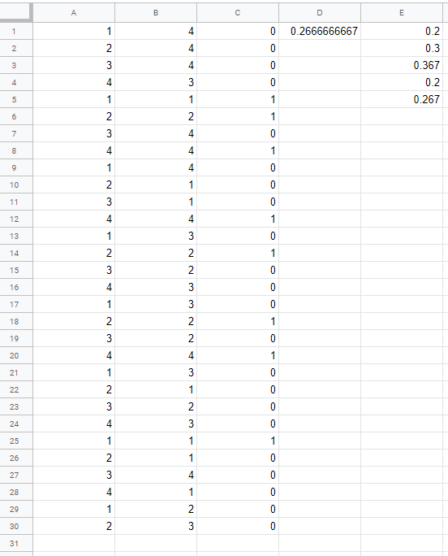
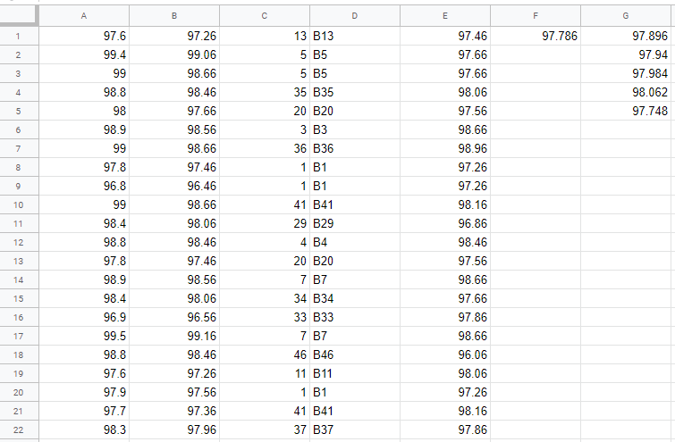
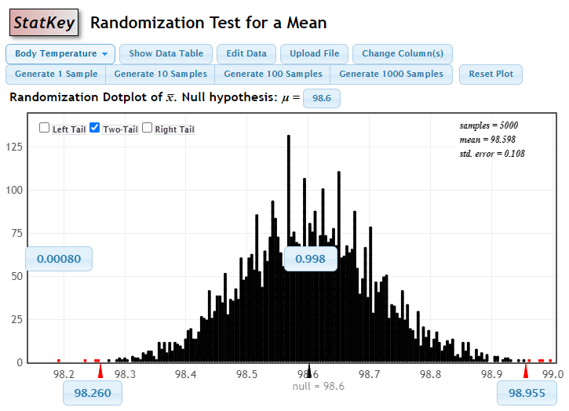
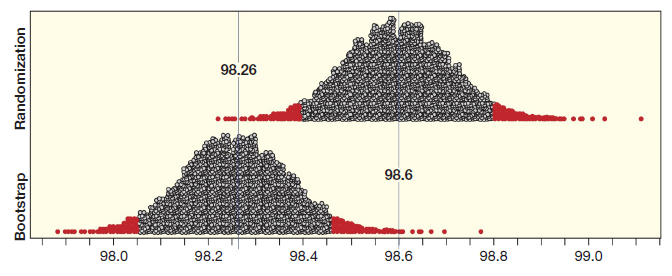
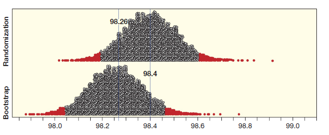

4.5 통계적 추론 정리
이 절에서는 앞에서 다룬 몇 가지 아이디어의 공통점과 차이점을 알아볼 것이다. 3장에서 다룬 부트스트랩 분포와 이 장에서 소개한 임의화 분포의 공통점을 먼저 찾아볼 것이다. 그 다음 신뢰구간과 가설검증 사이의 연관성을 조사한다. 마지막으로 임의화 분포의 정의를 살펴보고 임의화 분포를 실제로 생성하는 방법을 소개한다.
임의화 분포와 부트스트랩 분포의 유사성
3장에서 모수의 신뢰구간을 만드는 방법을 배웠다. 부트스트랩 분포는 표본 통계량으로 가능한 값이 어떻게 분포하는지를 알기 위하여 만든다. 오리지널 표본에서 반복을 허용한 표본을 추출하고 통계량을 계산한다. 이 과정을 수천 번 이상 반복하여 만든 통계량들의 분포가 부트스트랩 분포이다. 부트스트랩 분포에서 그럴듯한 모수 값으로 생각할 수 있는 범위가 신뢰구간이다. 이 구간이 실제 모수를 포함할 가능성이 신뢰수준이다.
이 장에서는 모집단에 대한 주장을 검증하는 방법을 다루었다. 영가설과 대안가설을 설정한 후 관측된 표본이 어느 가설을 지지하는지 증거를 찾는다. 영가설이 참이라는 가정 하에서, 우연만으로 발생 가능한 통계량들의 분포를 만든다. 이 분포가 임의화 분포이다. 오리지널 관측 통계량이 임의화 분포에서 발생 가능성이 희박한 꼬리와 같은 곳에 위치한다면, 영가설을 반박하고 대안가설을 지지하는 증거로 판단한다.
두 분포에서 유사한 점은 무엇인가? 양쪽 모두 분포를 만들기 위하여 모의실험으로 표본을 뽑아 통계량을 계산하는 과정을 최소한 수천 번 반복한다. 두 경우 모두 분포의 중심 영역과 꼬리 영역을 구분한다. 중심 근처의 통계량은 분포에서 흔히 관측할 수 있는 대표적인 값으로 생각하지만, 한쪽 또는 양쪽 꼬리에 속한 통계량은 관측이 어려운 희귀한 값으로 판단한다. 부트스트랩 분포나 임의화 분포의 값들이, 실제로 모집단에서 표본을 반복하여 뽑을 수 있을 때 기대되는 값들이라 가정한다. 이 가정 하에서 표본으로 모집단의 모수에 관한 통계적 추론이 가능하다.
확인문제 1. 임의화 분포와 부트스트랩 분포의 공통점에 대한 설명으로 옳은 것은?
1 두 분포 모두 표본을 반복적으로 뽑아 통계량을 계산하는 과정을 수천 번 반복한다.
2 두 분포 모두 표본을 한 번만 뽑아 통계량을 계산하고, 이를 여러 번 반복한다.
3 부트스트랩 분포는 관측된 통계량의 분포를 나타내고, 임의화 분포는 그에 대한 신뢰구간을 만든다.
4 두 분포 모두 모수 값을 예측하는 데 사용되지 않는다.
확인문제 2. 부트스트랩 분포와 임의화 분포의 차이점에 대한 설명으로 옳은 것은?
1 부트스트랩 분포는 표본에서 반복적으로 뽑은 값들로 생성되고, 임의화 분포는 영가설이 참이라는 가정 하에서 생성된다.
2 부트스트랩 분포는 영가설이 참일 때 발생할 수 있는 값들로 생성되고, 임의화 분포는 표본의 반복을 통해 생성된다.
3 부트스트랩 분포는 표본에서 얻은 통계량을 그대로 사용하고, 임의화 분포는 표본 통계량을 반복적으로 변경한다.
4 부트스트랩 분포는 신뢰구간을 구하는 데 사용되고, 임의화 분포는 대안가설을 지지하는 증거를 구하는 데 사용된다.
확인문제 3. 임의화 분포와 부트스트랩 분포에서 “꼬리 영역”에 속한 통계량은 어떤 의미를 가지는가?
1 표본에서 쉽게 관측할 수 있는 값으로, 대표적인 값이다.
2 관측하기 어려운 희귀한 값으로, 영가설을 기각하는 증거가 된다.
3 표본에서 자주 발생하는 값으로, 대체로 신뢰할 수 있다.
4 표본에서 절대적으로 발생할 수 없는 값으로, 통계적 오류를 유발한다.
확인문제 4. 부트스트랩 분포와 임의화 분포에서 통계적 추론이 가능한 이유는 무엇인가?
1 표본을 반복하여 뽑을 수 있는 값들이 모집단의 모수에 대한 통계적 추론을 가능하게 한다.
2 표본을 한 번만 뽑을 수 있기 때문에, 모수에 대한 추론은 불가능하다.
3 표본의 크기가 일정하면 통계적 추론이 가능하다.
4 표본을 여러 번 반복할 필요 없이 단 한 번의 표본만으로 추론이 가능하다.
확인문제 5. 다음 중 신뢰구간에 대한 설명으로 옳은 것은?
1 신뢰구간은 항상 모수를 포함한다.
2 신뢰구간은 표본 통계량을 중심으로만 계산된다.
3 신뢰구간은 부트스트랩 분포에서 그럴듯한 모수 값을 포함하는 범위를 나타낸다.
4 신뢰구간은 영가설이 참일 때, 표본 통계량이 포함된 범위를 나타낸다.
신뢰구간과 가설검증의 관계
3장에서 신뢰구간은 모수로 그럴듯하다고 생각되는 값들의 범위라고 하였다. 4장에서 가설검증으로 영가설에서 설정한 모수 값이 그럴듯한 값인지 아닌지 결정하였다. 신뢰구간을 이용하여 가설검증을 할 수도 있고, 가설검증으로 특정 값이 신뢰구간 안에 포함되는지도 알 수 있다.
양쪽꼬리 검증의 공식적인 결정은, 영가설에서 설정된 모수 값이 신뢰구간 안에 포함되는지 여부와 관계가 있다.
- 영가설에서 설정한 모수 값이 \(95\%\) 신뢰구간의 바깥쪽에 위치할 때, 이 값은 모수로서 그럴듯한 값이 아니므로 \(5\%\) 유의수준의 양쪽꼬리 검증에서 영가설을 기각한다.
- 영가설에서 설정한 모수 값이 \(95\%\) 신뢰구간의 안쪽에 위치할 때, 이 값은 모수로서 그럴듯한 값이므로 \(5\%\) 유의수준의 양쪽꼬리 검증에서 영가설을 기각하지 못한다.
신뢰구간으로 가설검증을 할 수도 있고, 반대로 가설검증으로 신뢰구간을 구할 수 있다. 이 관계는 상당히 유연하여 여러 모수에 적용이 가능하고, 신뢰수준을 조절하여 특정 유의수준의 가설검증을 수행할 수 있다. 예를 들면, \(1\%\)의 가설검증으로 특정 값이 \(99\%\) 신뢰구간 안에 포함되는지 알 수 있다.
예제 4.30. 학생이 통계 개념을 얼마나 이해하고 있는지를 평가하는 표준화 시험 문제 중에 신뢰구간을 제대로 이해하고 있는지를 평가하는 문항이 있다. 지금까지 시험을 치른 모든 학생의 정답률은 약 \(42\%\)이다. 통계학 교수가 \(30\)명의 학생에게 신뢰구간 문항을 질문했더니 정답을 맞힌 학생이 \(17\)명이었다. 정답률은 17/30 = \(0.567\) 이다. 정답률에 대한 \(95\%\) 신뢰구간은 \((0.39, 0.75)\)이다. \(30\)명의 학생은 무작위 표본이라고 가정한다.
(1) 신뢰구간에 의하면 문항 정답률이 \(0.42\)가 아니라고 할 수 있는가?
(2) 문항은 4지 선다형이다. 학생들은 정답을 무작위로 고른다고 할 수 있는가?
풀이 (클릭하면 풀이가 보입니다)
(1) 가설은 다음과 같다.
- \(H_0: p = 0.42\)
- \(H_a: p \neq 0.42\)
영가설에서 설정한 값 \(0.42\)는 \(95\%\) 신뢰구간인 \((0.39, 0.75)\) 안에 포함된다. \(5\%\) 유의수준에서 영가설을 기각할 수 없다. 문항 정답률이 \(0.42\)가 아니라는 충분한 증거는 없다.
(2) 학생들이 정답을 무작위로 고른다면 정답률 \(p = 0.25\) 이다. \(0.25\)는 신뢰구간 안에 포함되지 않으므로 정답률이 \(0.25\)라는 영가설은 기각된다. 정답률이 \(0.25\)와 다르다고 결론 내릴 수 있다. 학생들은 정답을 무작위로 고르는 것보다는 잘하고 있다.
예제 4.31. 식당에서 흡연 금지에 대한 찬성률은 꾸준히 증가했다. \(2010\)년 8월에 찬성률은 \(59\%\)이었다. \(10\)년 전 조사에서는 \(40\%\)이었다. \(2010\)년의 찬성률을 \(p_2\), \(2000\)년의 찬성률을 \(p_1\)으로 표기하자. \(p_2 - p_1\)의 \(95\%\) 신뢰구간은 \((0.147, 0.233)\) 이다.
(1) 신뢰구간은 두 비율이 다르다는 대안가설에 대하여 유의수준 \(5\%\)에서 충분한 증거를 제공하는가?
(2) 유의수준 \(10\%\) 또는 \(1\%\)에서 검증 결과는 무엇인가?
풀이 (클릭하면 풀이가 보입니다)
(1) 영가설 \(H_0: p_2 = p_1\)이므로 영가설에서 모비율 차이는 \(p_2 - p_1 = 0\) 이다. \(p_2 - p_1\)의 \(95\%\) 신뢰구간 \((0.147, 0.233)\)은 0을 포함하지 않으므로 유의수준 \(5\%\)에서 영가설을 기각할 수 있는 충분한 증거가 있다. \(10\)년 동안 흡연 금지에 대한 찬성률은 달라졌다고 결론 내린다.
신뢰구간에는 양수만 있으므로 식당에서 흡연 금지에 대한 \(2010\)년의 찬성률은 \(2000\)년보다 높아졌다고 결론 내릴 수 있다. 이 결론은 한쪽꼬리 검증에서 더 적절하다고 생각할 수 있다. 하지만 양쪽꼬리 검증에서 영가설을 기각하는 표본 통계량은 같은 방향의 한쪽꼬리 검증에서 영가설을 기각한다.
(2) \(5\%\) 유의수준에서 영가설을 기각할 수 있으면 당연히 유의수준 \(10\%\)에서도 영가설을 기각할 수 있고 결과는 (1)와 같다. 하지만 \(95\%\) 신뢰구간으로 \(1\%\) 유의수준에서 영가설 기각 여부를 확고하게 결정할 수 없다. 유의수준 \(1\%\)에서 결론을 내려면 \(99\%\) 신뢰구간이 있어야 한다.
확인문제 1. 다음 중 신뢰구간과 가설검증의 관계에 대한 설명으로 옳은 것은?
1 \(95\%\) 신뢰구간이 영가설에서 설정한 모수 값을 포함하면, 영가설을 기각하지 못한다.
2 \(95\%\) 신뢰구간이 영가설에서 설정한 모수 값을 포함하지 않으면, 영가설을 기각할 수 없다.
3 신뢰구간을 이용하여 가설검증을 할 수 없으며, 가설검증만으로 신뢰구간을 구할 수 있다.
4 신뢰구간이 \(99\%\)일 때, 영가설에서 설정한 값이 포함되어 있으면, \(5\%\) 유의수준에서 영가설을 기각할 수 있다.
확인문제 2. 다음 중 신뢰구간에서 영가설을 기각할 수 있는 조건으로 옳은 것은?
1 영가설에서 설정한 모수 값이 신뢰구간의 중심에 위치하면 영가설을 기각할 수 없다.
2 영가설에서 설정한 모수 값이 신뢰구간 안에 포함되면, \(5\%\) 유의수준에서 영가설을 기각할 수 없다.
3 영가설에서 설정한 모수 값이 신뢰구간의 외부에 위치하면, \(5\%\) 유의수준에서 영가설을 기각할 수 있다.
4 신뢰구간이 넓을수록 영가설을 기각할 수 있는 증거가 더 강하다.
확인문제 3. 다음 중 신뢰구간과 가설검증을 결합하여 특정 유의수준에서 결과를 평가하는 방법에 대한 설명으로 옳은 것은?
1 가설검증을 통해 p-값을 구한 후, 그 값이 신뢰구간에 포함되는지 확인하여 결론을 내린다.
2 신뢰구간을 구한 후, 그 범위 안에 영가설에서 설정한 모수 값이 포함되면, 영가설을 기각할 수 없다.
3 유의수준 \(1\%\)로 가설검증을 수행하면, 신뢰구간은 항상 \(95\%\)로 설정된다.
4 유의수준을 조절하면 신뢰구간의 범위를 자동으로 조정할 수 있다.
확인문제 4. 다음 중 신뢰구간이 제공하는 정보에 대해 옳은 설명은?
1 신뢰구간은 항상 영가설을 반박하는 데 사용된다.
2 신뢰구간은 모수가 정확히 그 범위 안에 있다는 것을 보장한다.
3 신뢰구간은 특정 신뢰수준에서 모수가 포함될 가능성이 있는 범위를 제공한다.
4 신뢰구간은 가설검증 결과와는 관계없이 항상 동일한 값을 제공한다.
확인문제 5. 다음 중 \(5\%\) 유의수준에서 신뢰구간을 이용하여 가설검증을 수행할 때 올바른 절차는 무엇인가?
1 신뢰구간의 상한과 하한을 구하고, 영가설에서 설정한 모수 값이 이 범위 안에 있으면 영가설을 기각한다.
2 신뢰구간을 구하고, 영가설에서 설정한 모수 값이 신뢰구간의 바깥쪽에 있으면 영가설을 기각할 수 있다.
3 신뢰구간을 구하고, 영가설에서 설정한 모수 값이 신뢰구간에 포함되면 유의수준을 낮춰야 한다.
4 신뢰구간을 구하고, 영가설에서 설정한 모수 값이 신뢰구간에 포함되면 영가설을 기각한다.
신뢰구간과 가설검증 모두 중요하다!
가설검증에서 결론을 내리기 위해 신뢰구간을 사용할 수 있는데, 왜 굳이 가설검증을 배우는지 궁금할 수 있다. 신뢰구간이 영가설에서 설정한 모수 값을 포함하는지 확인하면 충분하지 않을까? 이 접근법을 채택한다면 기각 결정을 내릴 수 있지만, 증거의 강도에 대한 정보를 잃게 된다.
예를 들어, 위 예제의 가설검증에서 p-값은 \(0.0001\)보다 작다. 이는 \(2000\)년부터 \(2010\)년까지 \(10\)년 동안 식당에서의 흡연 금지를 찬성하는 미국인의 비율이 증가했다는 매우 강력한 증거이다.
반면에 “차이가 얼마나 큰가?”에 관심이 있지 차이가 존재하느냐엔 관심이 없을 수 있다. 이 경우 비율 차이에 대한 신뢰구간 \((0.147, 0.233)\)이 p-값이 매우 작다는 정보보다 훨씬 유용하다. 신뢰구간과 가설검증은 둘 다 중요한 통계적 추론 기법으로 어느 것을 사용하느냐는 상황에 따라 다르다.
예제 4.32. 각 질문에 대해 통계적 추론을 사용할 수 있는지 설명하라. 통계적 추론을 사용한다면 신뢰구간과 가설검증 중에서 어느 것이 더 적절한가?
(1) 병원에서 퇴원하는 부모 중에 표본을 뽑아 올바르게 설치된 유아 카시트의 비율을 추정한다.
(2) 문제 (1)의 표본으로, 올바르게 설치된 카시트의 비율이 두 개의 주요 유아용 카시트 브랜드 간에 차이가 있는가 알아본다.
(3) 미국 의회 기록을 보면, 작년에 상원의원이 투표에 불참한 횟수가 어느 정도인지 알 수 있다.
풀이 (클릭하면 풀이가 보입니다)
(1) 모집단 비율을 추정하기 때문에 신뢰구간이 적절하다.
(2) 두 브랜드의 비율이 다른가에 관심이 있으므로 가설검증이 적절하다.
(3) 작년의 투표 결과를 모두 알 수 있으므로 추론이 필요하지 않다. 표본을 사용하여 모집단으로 일반화 할 때 통계적 추론을 사용한다는 것을 명심하라.
확인문제 1. 다음 중 가설검증과 신뢰구간의 차이에 대해 옳은 설명은?
1 신뢰구간은 영가설을 기각하는 데 도움을 주며, 가설검증은 차이의 크기를 알려준다.
2 가설검증은 영가설을 기각할 수 있는지 여부를 제공하고, 신뢰구간은 그럴듯한 값의 범위를 제공한다.
3 신뢰구간은 가설검증을 수행하는 데 필수적이며, 가설검증은 신뢰구간을 계산하는 데 사용된다.
4 가설검증에서 p-값은 신뢰구간의 범위와 상관없이 결론을 내린다.
확인문제 2. 다음 중 통계적 추론을 사용할 수 있는 상황에 대한 설명으로 옳은 것은?
1 모집단에 대한 정보가 없을 때는 항상 신뢰구간을 사용한다.
2 모집단의 특정 비율을 추정할 때는 신뢰구간을 사용하는 것이 적절하다.
3 두 비율 간 차이가 있는지 확인할 때는 신뢰구간을 사용하는 것이 적절하다.
4 전체 모집단에 대해 연구할 때는 통계적 추론이 필요하지 않다.
확인문제 3. 다음 중 가설검증을 사용할 때 적절한 상황은 무엇인가?
1 두 그룹 간 차이가 존재하는지 확인할 때.
2 특정 비율이 이전에 비해 변했는지 확인할 때.
3 모집단의 평균을 추정할 때.
4 모집단에 대해 무작위 표본을 추출하여 평균을 계산할 때.
확인문제 4. 다음 중 “신뢰구간”을 사용하는 상황에 대해 옳은 설명은 무엇인가?
1 특정 값이 모집단에 대해 실제로 존재하는지 확인할 때.
2 두 값 간의 차이가 얼마나 중요한지 알기 위해.
3 모집단의 평균을 추정할 때.
4 가설검증을 통해 영가설을 기각하는 데만 사용한다.
확인문제 5. 다음 중 신뢰구간과 가설검증이 어떻게 연결되는지에 대한 설명으로 옳은 것은?
1 신뢰구간의 범위 안에 영가설에서 설정한 모수 값이 포함되면, 영가설을 기각할 수 없다.
2 신뢰구간은 가설검증을 수행하는 데 필요한 값을 제공한다.
3 신뢰구간과 가설검증은 상호 독립적이며 따로따로 사용된다.
4 신뢰구간이 넓을수록 영가설을 더 쉽게 기각할 수 있다.
임의화 분포 생성
임의화 표본 생성
통계적 검증을 위해 임의화 표본을 생성할 때 고려해야 할 기준이다.
- 영가설과 일치해야 한다.
- 오리지널 표본을 사용한다.
오리지널 데이터가 수집된 방식을 따르는 것이 가장 이상적이다.
4.2절에서 임의화 분포의 몇 가지 예를 다루었다. 밤에 전깃불이 쥐의 체중을 증가시키는지 실험할 때, 쥐를 두 그룹 중 하나(빛 또는 어둠)에 무작위로 할당하고 실험한 후, 체중 증가량을 측정했다.
영가설은 “전깃불이 체중 증가에 영향을 끼치지 않는다(\(H_0:\mu_L = \mu_D\))”이다. 체중 증가량 데이터에 그룹 라벨을 무작위로 할당한다면, 오리지널 표본을 사용하면서 영가설과 일치하게 된다. 이 과정을 반복하여 임의화 분포를 만든 후 표본 통계량만큼 극단적인 값이 발생할 가능성을 구한다. 이 값이 영가설이 참일 때 표본 통계량의 p-값이다.
이 절에서 비율 두 개의 차이, 상관관계, 비율 하나, 평균 하나 등의 가설검증을 추가로 소개한다.
확인문제 1. 임의화 분포를 생성할 때 가장 중요한 기준은 무엇인가?
1 오리지널 표본과 무관하게 랜덤으로 표본을 생성한다.
2 영가설과 일치해야 하며, 오리지널 표본을 사용한다.
3 통계량을 최대화하는 방식으로 표본을 생성한다.
4 표본을 무작위로 생성하되, 표본 크기를 일정하게 유지한다.
확인문제 2. 영가설이 참일 때, 임의화 분포에서의 p-값은 무엇을 나타내는가?
1 표본 통계량의 평균
2 표본 통계량이 발생할 가능성
3 표본 통계량과 이론적 통계량 간의 차이
4 임의화 분포에서 가장 자주 발생하는 통계량
확인문제 3. 임의화 표본을 생성할 때, 어떤 방식으로 표본을 추출해야 하는가?
1 표본은 반드시 오리지널 표본에서만 생성되어야 한다.
2 표본은 영가설과 일치하도록 무작위로 추출한다.
3 표본을 생성할 때, 오리지널 표본을 무작위로 변형하여 생성한다.
4 표본은 항상 동일한 크기로 유지해야 한다.
확인문제 4. 다음 중 임의화 분포에서 p-값을 구하는 과정을 설명하는 것은 무엇인가?
1 오리지널 표본을 기반으로, 영가설이 참일 때 발생할 수 있는 통계량을 계산하고, 그 극단적인 값이 나올 가능성을 구한다.
2 영가설을 기각하는 지점에서 p-값을 계산한다.
3 표본에서 가장 큰 값을 선택하여 p-값을 구한다.
4 임의화 분포에서 중심값을 계산한 후 p-값을 결정한다.
확인문제 5. “두 비율 차이”와 관련한 가설검증을 할 때 임의화 분포를 어떻게 활용할 수 있는가?
1 각 비율을 무작위로 교환하여 임의화 분포를 생성하고, 이를 통해 p-값을 구한다.
2 두 비율을 더하여 평균을 계산한 후 p-값을 구한다.
3 두 비율의 차이가 얼마나 중요한지 평가하기 위해 신뢰구간을 사용한다.
4 비율의 차이를 무작위로 설정하여 가설검증을 수행한다.
비율 두 개의 차이에 대한 임의화 검증
코카인에 중독되면 빠져나오기 매우 어렵다. 중독에서 벗어나기 위해 열심히 노력하는 중독자들 사이에서 재발은 흔하다. 한 연구팀이 데시프라민과 리튬이 코카인 중독 치료에 미치는 효과를 실험하였다. 이 연구의 대상자는 코카인 중독자인데, 실험은 \(6\)주 동안 계속되었다. \(72\)명의 피험자를 \(3\)개 그룹(데시프라민, 리튬, 플라시보) 중 하나에 무작위로 배정했고, 연구는 이중맹(double-blind)이었다. 연구 결과를 요약한 표가 아래에 있다.
| 그룹 | 재발 | 성공 |
|---|---|---|
| 데시프라민 | 10 | 14 |
| 리튬 | 18 | 6 |
| 플라시보 | 20 | 4 |
리튬 그룹과 플라시보 그룹의 재발률을 비교하자. 관심은 리튬이 플라시보보다 재발 방지에 더 효과적인가에 있다. 리튬과 플라시보 그룹의 재발률을 \(p_l\)과 \(p_n\)으로 정의하자. 가설은 다음이다.
\(H_0: p_l = p_n\)
\(H_a: p_l < p_n\)
표본 데이터에서 리튬 재발률 \(\hat{p}_l = 18/24 = 0.750\)은 플라시보의 재발률 \(\hat{p}_n = 20/24 = 0.833\)보다 작다. 이 결과는 통계적으로 유의한가? 무작위 분포를 만들어서 답해보자.
예제 4.33. 플라시보보다 리튬이 더 효과적인지 알아보기 위해 구글의 스프레드 앱을 사용하여 검증에 사용할 임의화 표본을 생성하고 통계량을 계산하는 방법을 설명하라.
풀이 (클릭하면 풀이가 보입니다)
구글 시트를 하나 만든다.
- 셀
A1에 ‘그룹’, 셀B1에 ’재발 여부’를 입력한다. - 셀
A2:A25에 ’리튬’을 입력한다. - 셀
B2:B19까지 \(18\)개 셀에 1을 입력한다. 1은 재발을 의미한다. - 셀
B20:B25까지 \(6\)개 셀에 0을 입력한다. 0은 재발하지 않음을 의미한다. - 셀
A26:A49에 ’플라시보’를 입력한다. - 셀
B26:B45까지 \(20\)개 셀에 1을 입력한다. - 셀
B46:B49까지 \(4\)개 셀에 0을 입력한다. - 셀
C2에=sum(B2:B25)/24 - sum(B26:B49)/24를 입력한다. - 셀 ’
B2:B49’를 임의로 섞는다.C2의 값을D2셀에 기록한다. - 위 과정을 \(5\)번 반복한 것이 아래 그림이다.

예제 4.34. 리튬 그룹과 플라시보 그룹 간의 비율 차이에 대한 임의화 분포 생성에 StatKey를 사용하라. p-값과 검증의 결론은 무엇인가?
풀이 (클릭하면 풀이가 보입니다)
아래 그림은 5,000개 임의화 표본에 대한 비율의 차이를 점도표로 나타낸 것이다. 예상대로 분포의 중심은 대략 0이다. 오리지널 표본 비율의 차이는 \(\hat{p}_l - \hat{p}_n = 0.750 - 0.833 = -0.083\)이다. 대안가설은 \(H_a: p_l < p_n\)이므로, 이것은 왼쪽꼬리 검증이다. 아래 그림에서 -\(0.083\)의 왼쪽 면적은 \(0.367\)이므로 p-값은 \(0.367\)이다. 이 p-값은 어떤 합리적인 유의수준보다 작지 않기 때문에, 영가설을 기각하지 못한다. 코카인 중독을 치료할 때 리튬이 플라시보보다 더 효과가 있다는 충분한 증거를 얻지 못했다.

확인문제 1. 리튬 그룹과 플라시보 그룹의 재발률 차이에 대한 임의화 검증에서, p-값이 \(0.367\)일 때 결론을 내릴 수 있는 것은 무엇인가?
1 p-값이 유의수준 \(0.05\)보다 작으므로 영가설을 기각한다.
2 p-값이 유의수준 \(0.05\)보다 크므로 영가설을 기각하지 않는다.
3 p-값이 유의수준 \(0.10\)보다 작으므로 영가설을 기각하지 않는다.
4 p-값이 유의수준 \(0.10\)보다 크므로 영가설을 기각한다.
확인문제 2. 리튬과 플라시보 그룹의 재발률을 비교한 연구에서 임의화 표본을 생성하는 과정에서 필요한 첫 번째 단계는 무엇인가?
1 두 그룹의 데이터를 임의로 섞는다.
2 각 그룹의 재발 여부를 무작위로 배정한다.
3 각 그룹의 데이터를 정렬한다.
4 재발 여부를 1과 0으로 변환한다.
확인문제 3. 리튬과 플라시보 그룹 간의 재발률 차이를 비교할 때, 만약 p-값이 \(0.367\)이라면, 이 결과가 의미하는 바는 무엇인가?
1 리튬이 플라시보보다 재발 방지에 더 효과적이다.
2 리튬이 플라시보보다 재발 방지에 더 효과적이지 않다.
3 통계적으로 유의미한 차이가 없다.
4 플라시보가 리튬보다 재발 방지에 더 효과적이다.
확인문제 4. 비율 두 개의 차이에 대한 임의화 검증을 위한 표본 데이터를 생성할 때, 각 그룹의 재발 여부를 무엇으로 입력해야 하는가?
1 그룹명을 1과 0으로 설정한다.
2 각 그룹에 대해 재발 여부를 1과 0으로 설정한다.
3 두 그룹의 크기를 동일하게 설정한다.
4 재발 여부를 랜덤으로 입력한다.
확인문제 5. 리튬 그룹과 플라시보 그룹의 재발률 차이에 대한 임의화 검증에서, 재발률 차이를 나타내는 표본 통계량을 계산하는 방법은 무엇인가?
1 두 그룹의 평균 차이를 계산한다.
2 두 그룹의 비율 차이를 계산한다.
3 각 그룹의 표준편차 차이를 계산한다.
4 각 그룹의 합계를 계산한다.
상관관계에 대한 임의화 검증
4.1절에서 미식 축구팀의 유니폼이 보이는 악의 점수(NFL_Malthvolence)와 야드당 벌칙 점수(ZPenYds)가 관련이 있는가를 다루었다. 모집단 상관관계\(\rho\)가 양수인지 검증하고 싶다. 가설은 다음과 같다.
- \(H_0:\rho = 0\)
- \(H_a:\rho > 0\)
데이터 이름은 “MalevolentUniformNFL”이다. \(28\)개 팀의 표본 상관관계 \(r = 0.43\)이다. 임의화 분포를 만들어, 표본 상관관계 \(r = 0.43\)이 갖는 증거의 강도를 평가하고 가설검증의 결론을 내려보자.
예제 4.35. 임의화 분포를 만들기 위해 영가설이 참이라고 가정한다. 이 경우에 영가설이 무엇을 의미하는지 설명하라. 영가설이 참이라는 가정 하에서, 원본 데이터를 사용하여 임의화 표본과 통계량을 어떻게 만드는가?
풀이 (클릭하면 풀이가 보입니다)
영가설은 𝜌 = 0이다. 이는 악의 점수(NFL_Malevolence)와 벌칙 점수(ZPenYds)가 실제 관련이 없다는 것을 의미한다. 따라서 한 변수의 값을 다른 변수의 값을 무작위로 섞어 연결할 수 있다.
구글 스프레드시트 앱으로 임의화 분포를 만들어보자.
시트1의 셀
A1에 다음 수식을 입력하여 데이터를 다운받는다.=importdata("http://www.lock5stat.com/datasets2e/MalevolentUniformsNFL.csv")
B2:C29데이터를 시트2의 셀A1에 복사한다.시트2의 셀
C1에=correl(A1:A28,B1:B28)을 입력하여 오리지널 상관관계를 계산하면 \(0.43\)이 나온다.칼럼 B를 무작위로 섞어 임의화 표본을 만든다.
셀
C1의 상관관계 값이 임의화 표본에서 얻은 통계량이다.이 과정을 \(5\)번 반복한 결과가 아래에 있다.

예제 4.36. StatKey를 사용하여 임의화 분포를 생성하고 p-값을 구하라. 유니폼과 벌칙 점수 사이의 관계에 대한 결론은 무엇인가?
풀이 (클릭하면 풀이가 보입니다)
- StatKey 웹 사이트에서 상관관계 임의화 검증을 선택한다.
- 데이터가 NFL_Malthvolence인지 확인한다.
- 모의실험을 10,000번 한다.
- 대안가설이 오른쪽 꼬리 검증이므로 “Right Tail”을 선택한다.
- 점도표 오른쪽 하단의 통계량 값을 \(0.43\)으로 바꾼다.
- p-값은 \(0.010\)이다(아래 그림 참조).
p-값이 작으므로 유니폼의 악의 점수와 벌칙 점수 사이에는 양의 연관이 있다고 결론 내린다.
이 결과는 실험이 아닌 관측 연구에서 나온 것이므로 인과 관계로 해석하지 말아야 한다. 심판이 악의적으로 보이는 선수에게 좀 더 벌칙을 주거나, 악의적인 유니폼을 입으면 더 공격적인 태도를 보일 수 있다. 그러나 공격성을 중시하는 구단주 또는 코칭 스태프는 공격적인 태도를 가진 선수를 더 선호하고 더 악의적으로 보이는 유니폼을 선택할 수도 있다.

확인문제 1. 리튬과 플라시보 그룹의 재발률 차이에 대한 임의화 검증에서, p-값이 \(0.010\)일 때 결론을 내릴 수 있는 것은 무엇인가?
1 p-값이 유의수준 \(0.05\)보다 작으므로 영가설을 기각한다.
2 p-값이 유의수준 \(0.05\)보다 크므로 영가설을 기각하지 않는다.
3 p-값이 유의수준 \(0.10\)보다 작으므로 영가설을 기각하지 않는다.
4 p-값이 유의수준 \(0.10\)보다 크므로 영가설을 기각한다.
확인문제 2. 임의화 분포를 만들기 위해 영가설이 참이라는 가정은 무엇을 의미하는가?
1 악의 점수와 벌칙 점수는 관련이 없다는 가정.
2 악의 점수와 벌칙 점수는 양의 상관관계를 가진다는 가정.
3 악의 점수와 벌칙 점수는 음의 상관관계를 가진다는 가정.
4 악의 점수와 벌칙 점수는 전혀 관련이 없다는 가정.
확인문제 3. 리튬 그룹과 플라시보 그룹 간의 재발률 차이를 비교할 때, 만약 p-값이 \(0.367\)이라면, 이 결과가 의미하는 바는 무엇인가?
1 리튬이 플라시보보다 재발 방지에 더 효과적이다.
2 리튬이 플라시보보다 재발 방지에 더 효과적이지 않다.
3 통계적으로 유의미한 차이가 없다.
4 플라시보가 리튬보다 재발 방지에 더 효과적이다.
확인문제 4. 상관관계에 대한 임의화 검증에서 데이터를 무작위로 섞는 이유는 무엇인가?
1 데이터를 무작위로 섞으면 상관관계를 더 명확히 알 수 있기 때문이다.
2 데이터를 무작위로 섞어 영가설이 참일 경우에 해당하는 결과를 얻기 위해서이다.
3 데이터를 무작위로 섞어 보다 정확한 p-값을 계산하기 위해서이다.
4 데이터를 무작위로 섞어 실험의 정확도를 높이기 위해서이다.
확인문제 5. 상관관계에 대한 임의화 검증을 위해 표본을 생성할 때, 어떤 통계량을 사용해야 하는가?
1 표본의 평균
2 표본의 상관계수
3 표본의 표준편차
4 표본의 중간값
비율 한 개에 대한 임의화 검증
예제 4.30에서 객관식 시험으로 학생 \(30\)명을 평가하는 상황을 설명하였다. 네 가지 선택지가 있으므로 학생들이 무작위로 답을 추측할 때 정답일 가능성은 \(0.25\)이지만, 문제에 대해 무언가를 알고 있다면 더 높을 것이다.
예제 4.37. 영가설(\(p = 0.25\))하에서 \(30\)개의 임의화 표본을 구글 스프레드시트 앱으로 만드는 방법을 설명하라.
풀이 (클릭하면 풀이가 보입니다)
- 시트1의
A1:A30셀에 1~4 사이 정답을 만든다. - 셀
B1:B30에=RANDBETWEEN(1,4)을 입력하여 무작위로 답을 고른다. - 셀
C1에=if(A1=B1, 1, 0)을 입력하여 답이 정답이면 1, 아니면 0으로 채점한다. - 셀
C1의 오른쪽 하단 사각형을 더블 클릭하여 수식을 셀C30까지 복사한다. - 셀
D1에=sum(C1:C30)/30을 입력하여 정답률을 구한다. - 셀
E1에 셀D1의 값을 입력한다. - \(5\)번 반복한 결과가 아래 그림이다.

확인문제 1. 주어진 상황에서 학생들의 객관식 시험 답안에 대한 임의화 표본을 생성하려고 한다. 구글 스프레드시트에서 임의화 표본을 생성하는 방법으로 옳지 않은 것은 무엇인가?
1 셀 A1:A30에 1부터 4까지의 정답을 만든다.
2 셀 B1:B30에 RANDBETWEEN(1, 4) 수식을 사용하여 무작위로 답을 고른다.
3 셀 C1에 답이 정답이면 1, 아니면 0을 입력하는 수식을 사용한다.
4 셀 C1에서 C30까지 수식을 입력한 후, 셀 D1에 평균값을 입력하여 정답률을 구한다.
확인문제 2. 구글 스프레드시트에서 셀 C1에 사용된 수식 “if(A1=B1, 1, 0)”의 의미는 무엇인가?
1 셀 A1과 B1이 같으면 0, 다르면 1을 입력한다.
2 셀 A1과 B1이 다르면 1, 같으면 0을 입력한다.
3 셀 A1과 B1이 같으면 1, 다르면 0을 입력한다.
4 셀 A1과 B1이 같으면 0, 다르면 1을 표시한다.
확인문제 3. \(30\)명의 학생을 대상으로 정답률을 계산하기 위한 임의화 표본을 생성했을 때, 각 반복에서 얻은 정답률은 무엇을 측정하는가?
1 각 학생의 평균 점수
2 정답률의 변동성
3 임의화된 표본에서 얻은 정답률
4 각 학생의 전체 점수
확인문제 4. 정답률이 \(0.5\)로 나왔을 때, 이를 어떻게 해석할 수 있는가?
1 무작위로 답을 고른 학생들이 절반 이상 정답을 맞춘 것이다.
2 학생들이 정답을 맞힌 비율이 \(50\%\)라는 것을 의미한다.
3 표본에서 정답률이 \(50\%\)일 경우 영가설을 기각할 수 있다는 의미이다.
4 표본에서 정답률이 \(50\%\)일 경우 영가설을 채택해야 한다.
확인문제 5. \(30\)명의 학생들에 대한 임의화 검증을 \(5\)번 반복한 결과를 얻은 후, 이 데이터를 분석한 목적은 무엇인가?
1 학생들의 시험 점수 평균을 계산하는 것이다.
2 임의화된 표본에서 정답률의 차이를 분석하여 영가설을 검증하는 것이다.
3 학생들이 실제로 공부한 시간과의 관계를 분석하는 것이다.
4 정답률을 높이기 위한 방법을 찾는 것이다.
평균 한 개에 대한 임의화 검증
건강한 인간의 평균 체온은 얼마인가? 대부분의 사람들은 화씨 \(98.6\)도(섭씨 37도)라고 말한다. 교재 웹 사이트의 BodyTemp50 데이터는 남성 \(25\)명과 여성 \(25\)명에 대한 체온과 맥박에 관한 것이다. 표본 평균은 \(98.26\)도이고 표준 편차는 \(0.765\)도이다. 이 데이터는 평균 체온이 \(98.6\)도와 다르다는 유의한 증거(\(5\%\) 수준에서)를 제공하는가?
\(50\)명 모두 체온이 \(98.6\)도라고 생각하지는 않을 것이다. 사람마다 약간의 차이가 있기 때문이다. 중요한 질문은 표본 평균 \(98.26\)도는, 실제 평균 체온 \(\mu = 98.6\)도일 때, 우연히 발생할 수 있는가이다. 양쪽꼬리 검증의 가설은 다음과 같다.
- \(H_0:\mu = 98.6\)
- \(H_a:\mu \neq 98.6\)
표본이 영가설을 반박하는 증거를 제공하는지 평가하려면, 모집단 평균이 \(98.6\)이라는 영가설하에서, 임의화 표본을 생성하고 이에 기초한 평균에 대한 임의화 분포를 만들어야 한다. 3장에서 배운 부트스트랩 기법을 사용하지만 오리지널 표본의 평균이 영가설에서 설정한 \(98.6\)이라는 제약이 따른다.
예제 4.38. 오리지널 데이터를 사용하여 영가설이 참이라는 가정하에서, 임의화 표본과 통계량을 만드는 방법을 설명하라. 또 구글의 스프레드시트 앱을 사용하여 임의화 표본을 뽑고 통계량을 계산해보라.
풀이 (클릭하면 풀이가 보입니다)
영가설을 만족시키면서 동시에 오리지널 데이터를 쉽게 사용할 수 있는 한 가지 방법은 오리지널 표본의 모든 값에 일정한 양을 추가하는 것이다. 표본 평균 \(98.26\)은 영가설에서 설정한 \(98.6\)보다 \(0.34\) 낮으므로 각 표본의 값에 \(0.34\)를 더한다. 이렇게 만든 새로운 표본은 영가설과 일치하는 평균을 가지면서 오리지널 표본이 가지는 특성을 보존할 수 있다. 새로 만든 표본에서 \(50\)개의 값을 복원 추출하고 평균을 계산한다. 이 과정을 반복하면 영가설이 참이라는 가정하에서, 임의화 분포가 만들어진다.
구글 스프레드시트 사용법
시트1의 셀
A1에 다음 수식을 입력하여 데이터를 다운받는다.=importdata("http://www.lock5stat.com/datasets2e/BodyTemp50.csv")
시트2의 셀
A1에 시트1의 셀A2:A51의 값을 복사한다.시트2의 셀
B1에=A1 + 0.34를 입력한다. 셀B50까지 수식을 복사한다.셀
C1에=RANDBETWEEN(1, 50)을 입력하고 셀C50까지 수식을 복사한다.셀
D1에=concat("B", C1)을 입력하고 셀D50까지 수식을 복사한다.셀
E1에=INDIRECT(D1)을 입력하고 셀E50까지 수식을 복사한다.셀
F1에=AVERAGE(E1:E50)을 입력하여 평균을 계산한다.셀
G1에 셀F1의 평균 값을 입력한다.\(5\)번 반복한 결과가 아래 그림이다.

예제 4.39. StatKey를 사용하여 체온 검증에 대한 임의화 분포를 만든다. p-값을 구하고 해석하라.
풀이 (클릭하면 풀이가 보입니다)
StatKey 사용법
- “Randomization Test for a Mean”을 선택한다.
- 데이터가 “Body Temperature”인지 확인한다.
- 영가설에서 설정한 값이 \(98.6\)인지 확인한다.
- 모의실험을 5,000번 반복한다.
- 양쪽꼬리 검증이므로 “Two-Tail”을 체크한다.
- 점도표의 왼쪽 하단 상자의 값을 \(98.26\)으로 변경한다.
- 결과는 아래 그림이다.
양쪽꼬리 검증이므로 p-값은 왼쪽꼬리의 영역 값 \(0.0008\)의 두 배인 \(0.0016\)이다. p-값이 매우 작으므로 평균 체온이 \(98.6\)이라는 영가설을 기각한다. 표본이 영가설을 기각하는 확실한 증거를 제시하지만 그 차이는 \(0.34\)도로 실제적인 의미는 별로 없다.

확인문제 1. 표본 평균 체온이 \(98.26\)도일 때, 이를 \(98.6\)도와 비교하기 위한 임의화 표본을 생성하는 방법으로 옳은 것은 무엇인가?
1 영가설을 만족시키기 위해 모든 표본에 \(0.34\)를 더한다.
2 표본 평균이 \(98.26\)도보다 더 큰 값으로 임의화 표본을 생성한다.
3 각 표본에서 \(0.34\)를 빼서 영가설을 만족시킨다.
4 표본 데이터에서 \(0.34\)를 더하지 않고 직접 새로운 데이터를 만든다.
확인문제 2. 구글 스프레드시트에서 임의화 표본을 생성하고, 각 표본의 평균을 계산하기 위해 사용하는 수식으로 옳은 것은 무엇인가?
1 =RANDBETWEEN(1,4)을 사용하여 정답을 무작위로 선택한다.
2 =INDIRECT(D1)을 사용하여 표본에서 임의로 값을 선택한다.
3 =AVERAGE(E1:E50)을 사용하여 각 표본의 평균을 계산한다.
4 =IMPORTDATA()를 사용하여 데이터를 불러오는 방법만 사용한다.
확인문제 3. 체온 검증에서 평균이 \(98.6\)도라는 영가설을 기각하는 이유는 무엇인가?
1 p-값이 매우 작아 영가설을 기각할 수 있는 확실한 증거가 있기 때문이다.
2 p-값이 \(0.05\)보다 크므로 영가설을 기각하지 않는다.
3 표본 평균이 영가설에 맞는 범위 내에 있기 때문에 영가설을 기각한다.
4 체온 데이터가 정확하지 않기 때문에 영가설을 기각한다.
확인문제 4. 체온 검증에서 p-값이 \(0.0016\)일 경우, 이를 어떻게 해석할 수 있는가?
1 p-값이 매우 작아서 영가설을 기각한다는 강한 증거가 된다.
2 p-값이 크기 때문에 영가설을 기각할 수 없다.
3 p-값이 1에 가까워 영가설을 기각할 수 있다.
4 p-값이 너무 커서 데이터가 유효하지 않다고 판단한다.
확인문제 5. 체온 검증에서 영가설이 참일 때, 평균 체온 \(98.6\)도와 표본 평균 \(98.26\)도의 차이는 \(0.34\)도였다. 이 차이를 어떻게 해석해야 하는가?
1 \(0.34\)도는 실제적으로 큰 차이이므로 중요한 결과이다.
2 \(0.34\)도는 통계적으로 유의하지만 실제적으로 큰 차이는 아니다.
3 \(0.34\)도는 통계적으로 유의하지 않다.
4 \(0.34\)도는 실제적으로 중요하지 않지만, 표본에서 큰 차이를 보인다.
부트스트랩 분포와 임의화 분포의 관계
\(50\)명의 체온 데이터로 평균 체온 \(\mu\)에 대한 가설 \(H_0:\mu = 98.6\) vs \(H_a:\mu \neq 98.6\)을 검증하는 절차를 생각하자. 표본 평균 \(\bar{x}=98.26\)은 영가설에서 설정한 평균값 \(98.6\)보다 \(0.34\)가 작다. 각 표본 값에 \(0.34\)를 더해주면 표본 평균이 영가설의 평균 \(98.6\)이 된다. 이렇게 만든 새 표본에서 중복을 허용하여 표본을 추출하고 평균을 계산하여 임의화 분포를 만든다. 오리지널 표본 평균 \(98.26\)은 임의화 분포의 꼬리에 위치하여 p-값이 \(0.0016\)이었다. p-값이 매우 작아 영가설을 기각하고 평균 체온은 \(98.6\)보다 작다고 결론 내린다.
같은 데이터로 평균 체온 \(\mu\)에 대한 \(95\%\) 신뢰구간을 부트스트랩 분포로 구하는 절차를 생각하자. 오리지널 표본에서 중복을 허용하여 표본을 추출하고 평균을 계산한다. 이 과정을 반복하여 만든 것이 부트스트랩 분포이다. 부트스트랩 분포와 임의화 분포의 차이점은 무엇인가? 아래 그림에서 볼 수 있는 것처럼 각 표본 값에 \(0.34\)를 더한 것만 다르다.

부트스트랩 분포에서 \(95\%\) 신뢰구간은 양쪽 꼬리에서 \(2.5\%\) 표본을 제외한 구간이다. 이 구간은 \((98.05, 98.47)\)이다. 모집단의 평균 체온은 \(98.05\)와 \(98.47\) 사이에 있음을 \(95\%\) 확신할 수 있다.
부트스트랩 신뢰구간은 영가설에서 설정한 \(\mu=98.6\)을 포함하지 못한다. 임의화 분포 입장에서 보면 표본 평균 \(\bar{x}=98.26\)은 멀리 꼬리에 있다. \(98.6\)이 모집단의 평균으로 그럴듯한 값이 아니라면, 이 사실은 신뢰구간과 가설검증 모두에서 확인할 수 있어야 한다.
임의화 분포에서 \(2.5\%\)의 양쪽 꼬리는 영가설이 참일 때 극단적이라 간주되는 값이므로 영가설을 기각한다. 부트스트랩 분포에서 \(2.5\%\)의 양쪽 꼬리는 \(95\%\)의 신뢰구간을 벗어나는 값이므로 모집단의 평균으로 생각할 수 없다.
예제 4.40. 표본은 같지만 다른 가설 \(H_0:\mu = 98.4\) vs \(H_a:\mu \neq 98.4\)을 검증한다고 생각하자. 두 분포는 어떻게 달라지겠는가? 신뢰구간은 영가설의 값 \(98.4\)를 포함할까? 표본 평균이 \(98.26\)일 때 영가설은 기각될까?
풀이 (클릭하면 풀이가 보입니다)
부트스트랩 분포와 신뢰구간은 가설과 무관하므로 변하지 않는다. 영가설 \(H_0:\mu = 98.4\)를 검증할 때 임의화 표본은 중심이 \(98.4\)가 되도록 오른쪽으로 \(0.14\)만큼 이동한다. 아래 그림을 보면 영가설의 평균 \(98.4\)는 \(95\%\) 신뢰구간 안에 포함된다. 표본 평균 \(98.26\)은 임의화 분포에서 꼬리에 있지 않으므로 \(5\%\) 유의수준에서 영가설은 기각되지 않는다.

영가설의 모수가 부트스트랩 분포의 꼬리에 있을 때 표본 통계량이 임의화 분포의 꼬리에 있고, 영가설의 모수가 부트스트랩 분포의 중심 부분에 있으면 표본 통계량이 임의화 분포의 중심 부분에 있음을 알 수 있다. 이런 관계는 평균이외의 다른 모수에서도 볼 수 있다. 모의실험으로 신뢰구간과 가설검증을 수행할 때 두 방법의 결론이 정확히 같지는 않다. 임의화 분포와 부트스트랩 분포의 \(2.5\%\) 꼬리 경계는 모의실험에 따라 약간 달라지기 때문이다.
확인문제 1. 부트스트랩 분포와 임의화 분포의 차이점에 대한 설명으로 옳은 것은 무엇인가?
1 부트스트랩 분포는 표본에서 중복을 허용하여 표본을 추출하고 평균을 계산하여 분포를 만든다.
2 임의화 분포는 오리지널 표본 평균을 \(98.6\)과 일치하도록 설정하여 만든다.
3 부트스트랩 분포는 표본 평균에 \(0.34\)를 더한 값만 다르다.
4 임의화 분포와 부트스트랩 분포는 기본적인 계산 방법이 완전히 다르다.
확인문제 2. 다음 중 부트스트랩 분포와 임의화 분포의 관계에 대한 설명으로 맞는 것은 무엇인가?
1 부트스트랩 분포의 \(95\%\) 신뢰구간은 임의화 분포와 관계없이 항상 동일하다.
2 부트스트랩 분포의 신뢰구간은 항상 영가설의 평균을 포함하지 않는다.
3 임의화 분포에서 영가설의 평균은 신뢰구간에 포함되지 않으면 기각된다.
4 임의화 분포는 표본에서 중복을 허용하지 않고 새로운 표본을 생성한다.
확인문제 3. 영가설이 \(H_0:\mu = 98.6\)일 때, 표본 평균 \(98.26\)도는 임의화 분포에서 어디에 위치하는가?
1 표본 평균 \(98.26\)도는 임의화 분포의 중심에 있다.
2 표본 평균 \(98.26\)도는 임의화 분포의 꼬리 부분에 위치한다.
3 표본 평균 \(98.26\)도는 임의화 분포의 \(95\%\) 신뢰구간 안에 포함된다.
4 표본 평균 \(98.26\)도는 임의화 분포의 \(2.5\%\) 양쪽 꼬리를 포함하지 않는다.
확인문제 4. 임의화 분포에서 \(2.5\%\) 양쪽 꼬리 영역을 벗어난 표본 평균이 영가설에서 설정한 평균을 기각하는 이유는 무엇인가?
1 표본 평균이 \(2.5\%\) 꼬리 영역에 있으면, 영가설을 기각할 수 있는 충분한 증거가 된다.
2 표본 평균이 \(2.5\%\) 꼬리 영역을 벗어나면, 영가설을 기각할 수 없다.
3 \(2.5\%\) 꼬리 영역을 벗어난 표본 평균은 우연히 발생할 확률이 매우 낮다.
4 표본 평균이 \(2.5\%\) 꼬리 영역에 있으면, 영가설을 받아들여야 한다.
확인문제 5. 체온 검증에서 평균 체온 \(98.6\)도에 대해 임의화 분포와 부트스트랩 분포의 결과가 일치하지 않는 이유는 무엇인가?
1 부트스트랩 분포와 임의화 분포의 \(2.5\%\) 꼬리 경계는 모의실험에 따라 달라지기 때문이다.
2 부트스트랩 분포는 항상 영가설을 기각하는 강한 증거를 제공한다.
3 임의화 분포와 부트스트랩 분포는 동일한 계산 방법을 사용한다.
4 부트스트랩 분포에서 \(95\%\) 신뢰구간은 항상 정확하게 일치한다.
학습 내용 정리
다음 사항을 이해하거나 해결하는 능력이 있어야 한다.
- 신뢰구간은 양쪽꼬리 검증에서 기각되지 않는 모수 값들의 모임이다.
- 신뢰구간을 이용하여 양쪽꼬리 검증에서 영가설 기각 여부를 결정할 수 있다.
- 통계적 추론이 필요한 상황에서 가설검증과 신뢰구간 중에 어느 것이 더 적절한지 판단할 수 있다.
- 표본과 영가설이 주어지면 임의화 분포를 만드는 방법을 설명할 수 있다.
표집 분포, 부트스트랩 분포, 임의화 분포
표집 분포(sampling distribution)는 모집단에서 추출한 표본 통계량의 분포이다. 표집 분포의 중심은 일반적으로 모집단 모수의 실제 값이다.
부트스트랩 분포(bootstrap distribution)는 표집 분포를 흉내낸다. 부트스트랩 분포의 중심은 일반적으로 오리지널 표본 통계량 값이다.
임의화 분포(randomization distribution)는 영가설이 참일 때의 표집 분포를 흉내낸다. 임의화 분포의 중심은 일반적으로 영가설의 모수 값이다.
신뢰구간과 가설검증의 관계
신뢰구간과 양쪽꼬리 검증 사이에는 다음 관계가 있다.
- 영가설의 모수 값이 \(95\%\) 신뢰구간 안에 포함되지 않을 때, 이 값은 모수로서 그럴듯한 값이 아니므로 \(5\%\) 유의수준의 양쪽꼬리 검증에서 영가설을 기각한다.
- 영가설의 모수 값이 \(95\%\) 신뢰구간 안에 포함될 때, 이 값은 모수로서 그럴듯한 값이므로 \(5\%\) 유의수준의 양쪽꼬리 검증에서 영가설을 기각하지 못한다.
임의화 표본 생성
가설검증을 위해 임의화 표본을 만들 때 필요한 기준이다.
- 영가설과 일치해야 한다.
- 오리지널 표본을 사용한다.
오리지널 데이터가 수집된 방식을 따르는 것이 가장 이상적이다.
확인문제 1. 신뢰구간과 양쪽꼬리 검증 사이의 관계로 옳은 설명은 무엇인가?
1 영가설의 모수 값이 \(95\%\) 신뢰구간 안에 포함될 때, 이 값은 모수로서 그럴듯한 값이므로 영가설을 기각한다.
2 영가설의 모수 값이 \(95\%\) 신뢰구간 안에 포함되지 않을 때, 이 값은 모수로서 그럴듯한 값이 아니므로 영가설을 기각한다.
3 영가설의 모수 값이 \(95\%\) 신뢰구간 안에 포함될 때, \(5\%\) 유의수준에서 영가설을 기각할 수 있다.
4 \(95\%\) 신뢰구간을 이용하여 양쪽꼬리 검증에서 영가설을 기각할 수 없다.
확인문제 2. 부트스트랩 분포와 임의화 분포의 차이점으로 옳은 것은 무엇인가?
1 부트스트랩 분포는 검증 통계량을 기반으로 표집 분포를 흉내낸다.
2 임의화 분포는 표집 분포를 흉내내고, 중심은 영가설의 모수 값이다.
3 부트스트랩 분포는 영가설이 참일 때의 표집 분포를 흉내낸다.
4 임의화 분포는 오리지널 표본 통계량을 기반으로 부트스트랩 분포를 만든다.
확인문제 3. 임의화 분포를 만드는 기준으로 옳은 것은 무엇인가?
1 오리지널 표본을 사용하며, 영가설과 일치해야 한다.
2 표본을 무작위로 추출하며, 영가설과 일치하지 않아도 된다.
3 오리지널 표본은 사용하지 않으며, 표본 크기를 줄여야 한다.
4 임의화 표본 생성 시 오리지널 표본이 반드시 필요한 것은 아니다.
확인문제 4. 부트스트랩 분포와 표집 분포의 차이점에 대한 설명으로 옳은 것은 무엇인가?
1 부트스트랩 분포의 중심은 오리지널 표본 통계량 값이며, 표집 분포의 중심은 모집단 모수의 실제 값이다.
2 표집 분포의 중심은 오리지널 표본 통계량 값이며, 부트스트랩 분포의 중심은 모집단 모수의 실제 값이다.
3 표집 분포와 부트스트랩 분포의 중심은 동일한 값을 가진다.
4 표집 분포는 영가설을 가정하고, 부트스트랩 분포는 영가설을 가정하지 않는다.
확인문제 5. 가설검증을 위해 임의화 표본을 만들 때 중요한 기준으로 옳은 것은 무엇인가?
1 오리지널 표본을 사용하고, 영가설과 일치해야 한다.
2 임의화 표본은 영가설과 일치할 필요가 없다.
3 오리지널 표본을 사용하지 않고 새로운 표본을 생성해야 한다.
4 임의화 표본 생성 시, 표본 크기는 고정되어 있어야 한다.
과제 4.13. 같은 가설검증 하나에 세 개의 다른 표본에 기초한 신뢰구간이 있다. 각 신뢰구간을 이용한 가설검증의 결론을 고르시오. (신뢰수준 \(95\%\)↔︎유의수준 \(5\%\), \(90\%\)↔︎\(10\%\), \(99\%\)↔︎\(1\%\); 신뢰구간이 영가설 값을 포함하면 기각하지 못한다.)
\[H_0: \mu = 15 \text{ vs } H_a: \mu \neq 15\]
(1)-a 95% 신뢰구간 (13.9, 16.2) — 가설검증 결론은?
1 유의수준 1%에서 영가설 기각
2 유의수준 5%에서 영가설 기각
3 유의수준 10%에서 영가설 기각
4 유의수준 1%에서 영가설 기각 못함
5 유의수준 5%에서 영가설 기각 못함
6 유의수준 10%에서 영가설 기각 못함
(1)-b 95% 신뢰구간 (12.7, 14.8) — 가설검증 결론은?
1 유의수준 1%에서 영가설 기각
2 유의수준 5%에서 영가설 기각
3 유의수준 10%에서 영가설 기각
4 유의수준 1%에서 영가설 기각 못함
5 유의수준 5%에서 영가설 기각 못함
6 유의수준 10%에서 영가설 기각 못함
(1)-c 90% 신뢰구간 (13.5, 16.5) — 가설검증 결론은?
1 유의수준 1%에서 영가설 기각
2 유의수준 5%에서 영가설 기각
3 유의수준 10%에서 영가설 기각
4 유의수준 1%에서 영가설 기각 못함
5 유의수준 5%에서 영가설 기각 못함
6 유의수준 10%에서 영가설 기각 못함
\[H_0: p = 0.5 \text{ vs } H_a: p \neq 0.5\]
(2)-a 95% 신뢰구간 (0.53, 0.57) — 가설검증 결론은?
1 유의수준 1%에서 영가설 기각
2 유의수준 5%에서 영가설 기각
3 유의수준 10%에서 영가설 기각
4 유의수준 1%에서 영가설 기각 못함
5 유의수준 5%에서 영가설 기각 못함
6 유의수준 10%에서 영가설 기각 못함
(2)-b 95% 신뢰구간 (0.41, 0.52) — 가설검증 결론은?
1 유의수준 1%에서 영가설 기각
2 유의수준 5%에서 영가설 기각
3 유의수준 10%에서 영가설 기각
4 유의수준 1%에서 영가설 기각 못함
5 유의수준 5%에서 영가설 기각 못함
6 유의수준 10%에서 영가설 기각 못함
(2)-c 99% 신뢰구간 (0.35, 0.55) — 가설검증 결론은?
1 유의수준 1%에서 영가설 기각
2 유의수준 5%에서 영가설 기각
3 유의수준 10%에서 영가설 기각
4 유의수준 1%에서 영가설 기각 못함
5 유의수준 5%에서 영가설 기각 못함
6 유의수준 10%에서 영가설 기각 못함
\[H_0: \rho = 0 \text{ vs } H_a: \rho \neq 0\]
(3)-a 95% 신뢰구간 (0.07, 0.15) — 가설검증 결론은?
1 유의수준 1%에서 영가설 기각
2 유의수준 5%에서 영가설 기각
3 유의수준 10%에서 영가설 기각
4 유의수준 1%에서 영가설 기각 못함
5 유의수준 5%에서 영가설 기각 못함
6 유의수준 10%에서 영가설 기각 못함
(3)-b 90% 신뢰구간 (−0.78, −0.39) — 가설검증 결론은?
1 유의수준 1%에서 영가설 기각
2 유의수준 5%에서 영가설 기각
3 유의수준 10%에서 영가설 기각
4 유의수준 1%에서 영가설 기각 못함
5 유의수준 5%에서 영가설 기각 못함
6 유의수준 10%에서 영가설 기각 못함
(3)-c 99% 신뢰구간 (−0.06, 0.03) — 가설검증 결론은?
1 유의수준 1%에서 영가설 기각
2 유의수준 5%에서 영가설 기각
3 유의수준 10%에서 영가설 기각
4 유의수준 1%에서 영가설 기각 못함
5 유의수준 5%에서 영가설 기각 못함
6 유의수준 10%에서 영가설 기각 못함
\[H_0: \mu_1 = \mu_2 \text{ vs } H_a: \mu_1 \neq \mu_2\]
(4)-a 95% 신뢰구간 (0.12, 0.54) — 가설검증 결론은?
1 유의수준 1%에서 영가설 기각
2 유의수준 5%에서 영가설 기각
3 유의수준 10%에서 영가설 기각
4 유의수준 1%에서 영가설 기각 못함
5 유의수준 5%에서 영가설 기각 못함
6 유의수준 10%에서 영가설 기각 못함
(4)-b 99% 신뢰구간 (−2.1, 5.4) — 가설검증 결론은?
1 유의수준 1%에서 영가설 기각
2 유의수준 5%에서 영가설 기각
3 유의수준 10%에서 영가설 기각
4 유의수준 1%에서 영가설 기각 못함
5 유의수준 5%에서 영가설 기각 못함
6 유의수준 10%에서 영가설 기각 못함
(4)-c 90% 신뢰구간 (−10.8, −3.7) — 가설검증 결론은?
1 유의수준 1%에서 영가설 기각
2 유의수준 5%에서 영가설 기각
3 유의수준 10%에서 영가설 기각
4 유의수준 1%에서 영가설 기각 못함
5 유의수준 5%에서 영가설 기각 못함
6 유의수준 10%에서 영가설 기각 못함
과제 4.14. 운전자가 차창을 통해 자외선에 노출되면 피부암에 걸릴 위험이 높아질 수 있다는 연구결과가 나왔다. 이 연구는 \(2004\)년 미국의 한 대학 암 센터에서 \(1{,}050\)명의 피부암 환자 기록을 검토했다. 피부암의 일종인 흑색종 암환자 \(42\)명 중 신체의 왼쪽은 \(31\)명, 오른쪽은 \(11\)명이었다.
(1) 이 연구의 종류는?
1 실험연구
2 관측연구
(2) 왼쪽에 흑색종이 생긴 환자 비율은?
1 0.738
2 0.262
3 0.04
4 0.03
(3)-a 왼쪽에 생길 가능성의 95% 부트스트랩 신뢰구간 하한은?
1 0.102
2 0.324
3 0.415
4 0.579
5 0.654
6 0.861
(3)-b 상한은?
1 0.102
2 0.324
3 0.415
4 0.579
5 0.654
6 0.861
(4)-a 왼쪽>오른쪽 관심일 때 영가설은?
1 \(H_0: p = 0.5\)
2 \(H_0: p \lt 0.5\)
3 \(H_0: p \gt 0.5\)
4 \(H_0: p \neq 0.5\)
5 \(H_a: p \lt 0.5\)
6 \(H_a: p \gt 0.5\)
7 \(H_a: p \neq 0.5\)
(4)-b 대안가설은?
1 \(H_0: p = 0.5\)
2 \(H_0: p \lt 0.5\)
3 \(H_0: p \gt 0.5\)
4 \(H_0: p \neq 0.5\)
5 \(H_a: p \lt 0.5\)
6 \(H_a: p \gt 0.5\)
7 \(H_a: p \neq 0.5\)
(5) 가설검증의 종류는?
1 왼쪽꼬리 검증
2 오른쪽꼬리 검증
3 양쪽꼬리 검증
(6) (3)의 신뢰구간으로 가설을 검증한 결과는?
1 영가설을 기각한다
2 영가설을 기각하지 못한다
(7) 임의화 분포로 (4) 가설의 p-값=0.003. 결과는?
1 영가설을 기각한다
2 영가설을 기각하지 못한다
(8) “왼쪽 햇빛 노출 때문에 왼쪽 흑색종이 더 많다”는 결론을 뒷받침하는가?
1 실험연구이므로 그렇다
2 관측연구이므로 그렇다
3 실험연구이므로 그렇지 않다
4 관측연구이므로 그렇지 않다
과제 4.15. 각 질문에 대하여 신뢰구간, 가설검증, 통계적 추론이 적절하지 않음 중 가장 적절한 것을 고르시오.
(1) 미국 유권자의 몇 %가 유치원~고등학교 수학 교육을 지지하는가?
1 신뢰구간
2 가설검증
3 통계적 추론이 적절하지 않다
(2) 농구선수의 홈경기 자유투 비율이 원정 때보다 더 높은가?
1 신뢰구간
2 가설검증
3 통계적 추론이 적절하지 않다
(3) 자전거 타는 성인의 대다수가 헬멧을 착용하는가?
1 신뢰구간
2 가설검증
3 통계적 추론이 적절하지 않다
(4) 2014 캐나다 올림픽 하키팀 23명이 미국팀 23명보다 평균 나이가 많았는가?
1 신뢰구간
2 가설검증
3 통계적 추론이 적절하지 않다
(5) 공중화장실 이용자 중 손 씻는 사람이 몇 %인가?
1 신뢰구간
2 가설검증
3 통계적 추론이 적절하지 않다
(6) 고교 운동 경험 성인이 비경험 성인보다 평균 얼마나 더 운동하는가?
1 신뢰구간
2 가설검증
3 통계적 추론이 적절하지 않다
(7) 2010년 미국 상원의 몇 %가 연방대법원 선거에 투표했는가?
1 신뢰구간
2 가설검증
3 통계적 추론이 적절하지 않다
(8) 20세 남성의 하루 평균 칼로리 섭취량은?
1 신뢰구간
2 가설검증
3 통계적 추론이 적절하지 않다